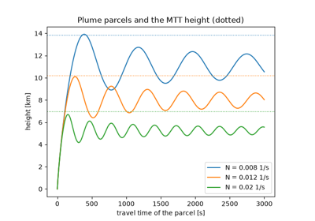
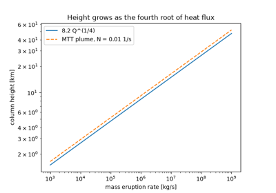
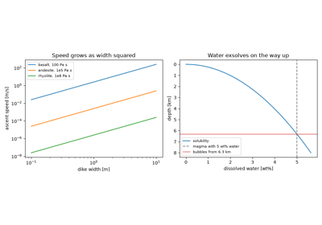
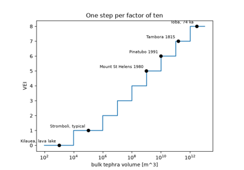

Breakthroughs in Volcanology and Geochemistry#
Rocks record their own history in two ways: in the radioactive clocks they
carry and in the chemistry they inherit from the melt they crystallized from.
Physicists found the clocks first, with Rutherford and Soddy’s decay law, and
within a decade Boltwood and Holmes were dating minerals and the strata around
them. Geochemistry followed with Bowen’s crystallizing melts, Goldschmidt’s
rules of substitution and Urey’s isotope thermometer, and the 1950s produced
radiocarbon, the age of the Earth and the concordia and isochron that are
still used. Volcanology became quantitative in the same years: the physics of
turbulent plumes, the inflating magma chamber, the viscosity of melts, the
heights of eruption columns, ascent in dikes and a common scale of eruption
size. This chronology traces the results behind
earthsciencekit.volcanology. Every example uses deterministic synthetic
inputs; none inverts real measurements.
1896 – Rayleigh’s Fractional Distillation#
Lord Rayleigh asked how far a mixture can be separated when the product is
removed as soon as it forms, by diffusion or distillation. Each increment is
only slightly richer in one component, but the remainder keeps losing it, so
its composition changes as the fraction left raised to the power
alpha - 1. The same law describes the isotopes of evaporating water and of
raindrops, and the trace elements of a crystallizing melt.
Implementation: rayleigh_fractionation()
(new) and delta_value() (new). The
example evaporates a pool of water and checks that the vapour collected holds
what the liquid lost.
References: Lord Rayleigh, “Theoretical considerations respecting the separation of gases by diffusion and similar processes,” Philosophical Magazine 42 (1896): 493-498.
1902 – Rutherford and Soddy’s Decay Law#
Ernest Rutherford and Frederick Soddy found that the activity of thorium
emanation falls by half in about a minute, whatever is done to it, and that
thorium keeps producing new emanation at a steady rate. Radioactivity, they
concluded, is the spontaneous transformation of one element into another, and
a fixed fraction of the atoms present changes per unit time. The number left
decays exponentially, with a half-life ln 2 / lambda.
Implementation: decay_constant() (new)
and parent_fraction() (new). The example
recovers the 55.6-second half-life of radon-220 from the slope of the
logarithm of its activity.
References: E. Rutherford and F. Soddy, “The cause and nature of radioactivity,” Philosophical Magazine 4 (1902): 370-396 and 569-585.
1907 – Boltwood’s Uranium-Lead Ages#
Bertram Boltwood saw that uranium minerals always contain lead, and more of it
in geologically older rocks. Taking lead as the stable end of the uranium
series, he divided the lead-to-uranium ratio by a production rate and obtained
ages of hundreds of millions to more than two billion years. The exact form,
log(1 + D/P) / lambda, reduces to Boltwood’s ratio for young minerals and
is smaller for old ones.
Implementation: radiometric_age()
(new). The example compares the exponential age with Boltwood’s linear form.
References: B. B. Boltwood, “On the ultimate disintegration products of the radio-active elements. Part II. The disintegration products of uranium,” American Journal of Science 23 (1907): 77-88.
1913 – Holmes’s Age of the Earth#
Arthur Holmes combined lead-uranium ages of minerals with the order of the strata that held them and built the first radiometric time scale: about 370 million years for the Devonian and 1600 million years for the oldest Precambrian rocks he could date. The Earth was at least that old, far older than the tens of millions of years Kelvin had allowed.
Implementation: radiogenic_daughter()
(new). The example grows lead in uranium minerals for Holmes’s periods and
reads their ages back.
References: A. Holmes, “The association of lead with uranium in rock-minerals, and its application to the measurement of geological time,” Proceedings of the Royal Society of London A 85 (1911): 248-256. A. Holmes, The Age of the Earth (London: Harper, 1913).
1928 – Bowen’s Reaction Series#
Norman Bowen’s furnace experiments showed that a basaltic melt crystallizes
its minerals in a fixed order, olivine and calcic plagioclase first, and that
early crystals react with the remaining melt unless they are taken out of it.
Removing them, by settling for example, lets the residual melt evolve towards
granite. Trace elements show the difference: fractional crystallization
enriches an element the crystals reject without limit, while equilibrium
crystallization enriches it at most 1 / D.
Implementation:
fractional_crystallization_melt() (new)
and equilibrium_crystallization_melt()
(new). The example follows a compatible and an incompatible element through
both paths.
References: N. L. Bowen, The Evolution of the Igneous Rocks (Princeton: Princeton University Press, 1928). P. W. Gast, “Trace element fractionation and the origin of tholeiitic and alkaline magma types,” Geochimica et Cosmochimica Acta 32 (1968): 1057-1086.
1937 – Goldschmidt’s Geochemical Rules#
Victor Moritz Goldschmidt classified the elements by where they collect in the Earth and stated the rules that decide which ions replace one another in a crystal: ions of the same charge substitute freely when their radii differ by less than about 15%. Blundy and Wood (1994) made the rule quantitative. The partition coefficient falls off on both sides of the radius that fits the site, as the elastic strain of the lattice grows, and faster for ions that are too large.
Implementation: lattice_strain_partition()
(new). The example places divalent ions on a clinopyroxene-like site.
References: V. M. Goldschmidt, “The principles of distribution of chemical elements in minerals and rocks,” Journal of the Chemical Society (1937): 655-673. J. Blundy and B. Wood, “Prediction of crystal-melt partition coefficients from elastic moduli,” Nature 372 (1994): 452-454.
1947 – Urey’s Isotope Paleothermometer#
Harold Urey computed the thermodynamic properties of isotopic molecules and found that calcite growing in water takes up slightly more oxygen-18 the colder the water is. Fossil shells could therefore record ancient sea temperatures. His group calibrated the scale in 1953 on molluscs grown at known temperatures: about 4 K of cooling per per mil of enrichment.
Implementation: isotope_temperature()
(new), the calibration of Epstein et al. (1953). The example reads the
seasons from a synthetic shell.
References: H. C. Urey, “The thermodynamic properties of isotopic substances,” Journal of the Chemical Society (1947): 562-581. S. Epstein, R. Buchsbaum, H. A. Lowenstam and H. C. Urey, “Revised carbonate-water isotopic temperature scale,” Geological Society of America Bulletin 64 (1953): 1315-1326.
1949 – Libby’s Radiocarbon#
Willard Libby reasoned that cosmic rays keep the carbon-14 of the atmosphere in a steady state, that living things share it, and that it decays once they die. He and his colleagues measured natural radiocarbon and then dated wood and grain of known historical age, which fell on the expected decay curve. Conventional radiocarbon ages still use Libby’s half-life of 5568 years.
Implementation: radiocarbon_age()
(new). The example dates synthetic samples of known age and shows the 3%
offset of the 5730-year half-life.
References: W. F. Libby, E. C. Anderson and J. R. Arnold, “Age determination by radiocarbon content: world-wide assay of natural radiocarbon,” Science 109 (1949): 227-228. J. R. Arnold and W. F. Libby, “Age determinations by radiocarbon content: checks with samples of known age,” Science 110 (1949): 678-680.
1956 – Patterson’s Age of the Earth#
Clair Patterson measured lead isotopes in meteorites. Iron meteorites hold almost no uranium, so their lead is primordial; stony meteorites add lead grown from uranium. Together they fall on one line of 207Pb/204Pb against 206Pb/204Pb, whose slope is the radiogenic 207Pb/206Pb ratio of an age of 4.55 billion years. Modern ocean sediment lies on the same line, so the Earth formed with the meteorites.
Implementation: radiogenic_lead_ratio()
(new) and lead_lead_age() (new). The
example fits a synthetic meteorite isochron and recovers 4.55 Ga.
References: C. Patterson, “Age of meteorites and the earth,” Geochimica et Cosmochimica Acta 10 (1956): 230-237.
1956 – Wetherill’s Concordia#
George Wetherill plotted the two uranium-lead clocks, 206Pb/238U against 207Pb/235U. Minerals that stayed closed lie on a curve, the concordia, where both give the same age. Minerals that lost part of their lead in a later event lie on a straight chord, and its two intersections with the concordia date the crystallization and the lead loss.
Implementation: concordia_ratios()
(new). The example recovers both ages from the discordia of synthetic
zircons.
References: G. W. Wetherill, “Discordant uranium-lead ages, I,” Transactions, American Geophysical Union 37 (1956): 320-326.
1956 – Morton, Taylor and Turner’s Buoyant Plumes#
Bruce Morton, Geoffrey Taylor and Stewart Turner assumed that a turbulent
plume draws in its surroundings at a speed proportional to its own rising
speed. Fluxes of volume, momentum and buoyancy then obey three ordinary
differential equations, and in a stably stratified fluid the plume rises to a
height of about 5.0 F**(1/4) N**(-3/4), set by only its buoyancy flux and
the stratification. The theory is the basis of every model of eruption
columns.
Implementation: plume_rise_height()
(new) and the dynamic
simulate_eruption_column() (new), which
follows a parcel up the plume axis. The example compares the parcels with the
maximum height for three stratifications.
References: B. R. Morton, G. I. Taylor and J. S. Turner, “Turbulent gravitational convection from maintained and instantaneous sources,” Proceedings of the Royal Society of London A 234 (1956): 1-23. G. A. Briggs, Plume Rise (US Atomic Energy Commission, 1969).

Morton, Taylor and Turner’s buoyant plumes (1956)
1958 – Mogi’s Point Source#
Kiyoo Mogi modelled a magma chamber as a small pressurized sphere in an elastic half-space and matched the uplift and subsidence that surveys had measured around Sakurajima and Kilauea. The uplift is bell-shaped and halves at 0.766 times the source depth, so the width of the dome locates the chamber and its height gives the volume of magma added.
Implementation: mogi_displacement()
(new). The example recovers the depth of the source from the half-width of
the uplift.
References: K. Mogi, “Relations between the eruptions of various volcanoes and the deformations of the ground surfaces around them,” Bulletin of the Earthquake Research Institute 36 (1958): 99-134.
1961 – Nicolaysen’s Isochron#
Louis Nicolaysen showed how to date a rock without knowing how much daughter it started with. Minerals that crystallized together share the same initial 87Sr/86Sr but take up different amounts of rubidium; as 87Rb decays, they stay on a straight line whose slope gives the age and whose intercept gives the initial ratio.
Implementation: isochron_fit() (new).
The example fits a synthetic Rb-Sr mineral isochron.
References: L. O. Nicolaysen, “Graphic interpretation of discordant age measurements on metamorphic rocks,” Annals of the New York Academy of Sciences 91 (1961): 198-206.
1972 – Shaw’s Magma Viscosity#
Herbert Shaw found that the logarithm of the viscosity of a silicate melt is a
straight line in 1/T, with a slope computed from the molar composition,
and that the lines for basalt to rhyolite all pass near one point. One formula
predicted viscosities over twelve orders of magnitude to within a few tenths
of a log unit, and showed why rhyolite erupts explosively where basalt flows.
Implementation: shaw_viscosity() (new)
and arrhenius_viscosity() (new). The
example draws Shaw’s lines to their common point and checks that each is an
Arrhenius law.
References: H. R. Shaw, “Viscosities of magmatic silicate liquids: an empirical method of prediction,” American Journal of Science 272 (1972): 870-893.
1978 – Wilson, Sparks, Huang and Watkins’s Eruption Columns#
Lionel Wilson, Stephen Sparks, T. C. Huang and N. D. Watkins treated a
Plinian eruption column as a buoyant plume driven by the heat of the
fragmented magma it carries. Its height grows as the fourth root of the heat
flux, about 8.2 Q**(1/4) metres, so the height of a column measures the
eruption rate.
Implementation: column_height() (new).
The example compares it with the Morton-Taylor-Turner height of the same heat
flux in the atmosphere.
References: L. Wilson, R. S. J. Sparks, T. C. Huang and N. D. Watkins, “The control of volcanic column heights by eruption energetics and dynamics,” Journal of Geophysical Research 83 (1978): 1829-1836.

Wilson, Sparks, Huang and Watkins’s eruption columns (1978)
1981 – Wilson and Head’s Magma Ascent in Dikes#
Lionel Wilson and James Head followed magma from its source to the surface of the Earth and the Moon. Buoyancy drives laminar flow up a dike at a speed that grows as the square of its width, and the water dissolved in the magma comes out of solution as the pressure falls, which can fragment it near the surface.
Implementation: dike_ascent_velocity()
(new) and water_solubility() (new). The
example compares basalt, andesite and rhyolite and finds where a wet rhyolite
starts to exsolve bubbles.
References: L. Wilson and J. W. Head, “Ascent and eruption of basaltic magma on the Earth and Moon,” Journal of Geophysical Research 86 (1981): 2971-3001.

Wilson and Head’s magma ascent in dikes (1981)
1982 – Newhall and Self’s Volcanic Explosivity Index#
Christopher Newhall and Stephen Self combined erupted volume, column height and descriptions into one index from 0 to 8, so that eruptions in the historical record could be compared and counted. Above VEI 2 each step is a factor of ten in tephra volume.
Implementation: volcanic_explosivity_index()
(new), on the volume criterion only. The example places a few well-known
eruptions on the scale.
References: C. G. Newhall and S. Self, “The volcanic explosivity index (VEI): an estimate of explosive magnitude for historical volcanism,” Journal of Geophysical Research 87 (1982): 1231-1238.

Newhall and Self’s Volcanic Explosivity Index (1982)
See also#
Volcanology: units, equations and validation for conventions, equations and checks.